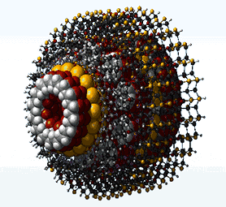

Los diferentes tipos de nanotecnología se clasifican según su forma de proceder (top-down o bottom-up) y de la naturaleza del medio en el que trabajan (seca o húmeda):
| 1 | Descendente (top-down) |
| 2 | Ascendente (botton-up) |
| 3 | Nanotecnología seca |
| 4 | Nanotecnología húmeda |